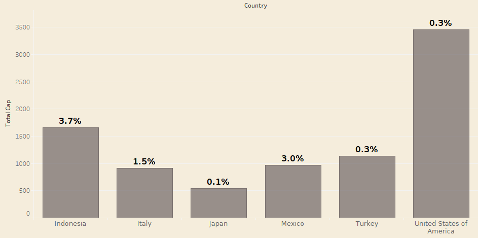
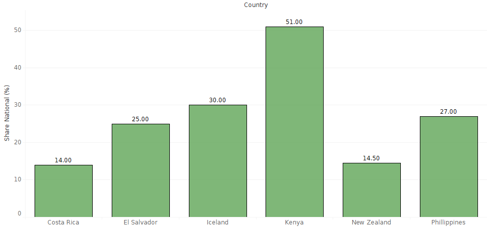
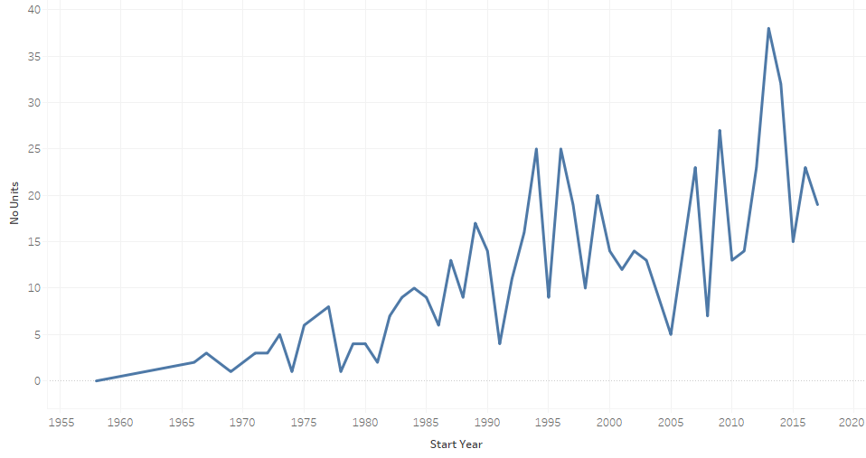
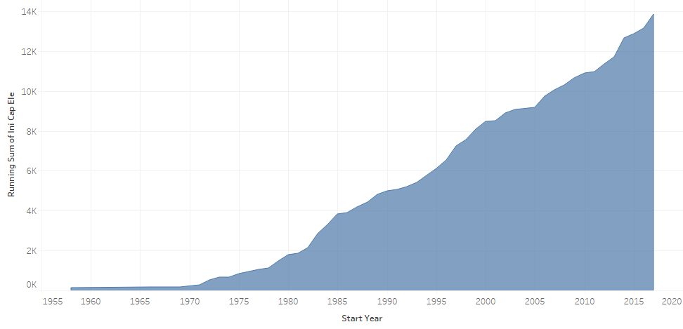

Geothermal Energy Production
An exploration in geothermal electricity generating power plants around the world
Geothermal energy refers to heat from the Earth's core which is a clean energy source with an inexhaustible supply.
Geothermal power plants use steam produced from reservoirs of hot water found a few miles or more below the Earth's surface to produce electricity.
The steam rotates a turbine that activates a generator, which produces electricity.
There are three major types of geothermal power plants: dry steam, flash steam, and binary cycle.
Trends have changed over the years. There were mostly dry stream and flash stations but now there has been
a trend toward smaller binary cycle stations.
The total installed global capacity of geothermal power plants seems like a lot but not all countries have installed geothermal plants yet.
High upfront costs, geographical location and other factors all play into this.
Map Of Geo Thermal Power Plants Across The World
( Hover over a country to see more details.)
Even though some areas like the United States Of America and Indonesia host a large number of power plants with relatively large total capacities,
their shares of generation capacity are quite small.
Countries generating less than 5% of their electricity from geothermal sources

The good news is that some countries have been able to produce a large percentage of their electricity from geothermal.
Countries generating about 15 percent or more of their electricity from geothermal sources

The current trend of geothermal energy shows more and more countries are realizing the huge potential for geothermal energy production.
Number Of Installed Power Plant Units Over Years 1958-2017

Another look shows the cumulative installed capacity growing every year.
Cumulative Energy Capacity Over Years 1958-2017

Projections for future geothermal energy production are varied but all estimate increasing further energy production in geothermal heat
across the world as our needs for electricity grow, increased focus on renewable sources and advances in drilling and turbine technology continue.
Sources
Data
The Joint Research Centre (JRC) is the European Commission science and knowledge service which has been updating the geothermal powerplant database since 2014.
Each entry in this dataset holds various attributes such as powerplant name, initial installed capacity, powerplant status, region, country, continent, installed year,
turbine type, turbine manufacturer, powerplant owner name, as well as reservoir information.
JRC Geothermal Power Plant Dataset
I also used supplemental data provided from Wikipedia on installed geothermal electric capacity.
Geothermal Power Wiki Data
Works Cited:
Geothermal Electricity Production Basics | NREL, www.nrel.gov/research/re-geo-elec-production.html.
About
My name is Eva Najera and I created this project for the CSc 196V Data Visualization course at California State University, Sacramento, Ca within the College of
Engineering and Computer Science.